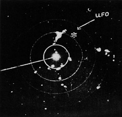

Les radars de la base aérienne de Griffiss (New York)
détectent l'approche d'un objet aérien non identifié. Un chasseur à réaction biplace F-94 Starfire
armé de missiles est immédiatement envoyé pour l'intercepter. Alors qu'il approche de l'engin, une intense chaleur
envahit soudain le cockpit. Cela devient si intolérable que le radariste, puis le pilote, sont contraints de
s'éjecter. Tandis que l'ovni s'éloigne, le F-94 tombe en piqué sur l'agglomération de Walesville où il percute une
habitation, prend feu et termine sa course sur une voiture, tuant ses 4 passagers (un couple et leurs 2 enfants). La
catastrophe fait 5 autres blessés, dont 2 grièvement atteints. Les 2 aviateurs, saints et saufs, sont très vites
récupérés par des voitures de l'USAF et les autorités militaires leur ordonnent un silence total sur l'affaire (au
point d'interdire au pilote, très choqué, d'aller voir les blessés et expliquer ce qui s'est passé aux parents des
victimes). Mais, avant d'être ramené à la base, le pilote a le temps de signaler l'étrange phénomène à un
journaliste accouru sur les lieux Keyhoe, Donald E.:Thayer, G. O.: "Optical and Radar Analyses of Field Cases", Scientific Study of Unidentified Flying Objects, University of Colorado, 1968.
L'USAF publie un communiqué officiel sur l'icident de la veille : l'avion avait décollé d'urgence pour
intercepter à tout prix un objet aérien inconnu et la mission avait été accomplie avec succès. Le
crash du classeur était dû à une panne de réacteur. L'USAF dément catégoriquement les allusions du journaliste à
une chaleur insoutenable qui aurait forcé l'équipage à s'éjecter alors que le moteur du F-94 fonctionnait
toujours. , soit 14 ans plus tard, Donald Keyhoe apprendra par l'un de ses contacts à
l'état-major de l'USAF que le pilote avait été victime d'une sorte de vide cérébral entre le moment où le
radariste avait sauté et celui où son propre parachute s'était ouvert. En fait, il ne se souvenait pas de s'être
éjecté... Le radariste, quant à lui, n'avait rien ressenti de tel.
Au lieu-dit Le Château (Nièvre), t, épicier à
Vielmanay, roule en voiture. Il est soudain ébloui par une lueur intense. Puis il perçoit une détonation et son
pare-brise vole en éclat. Il parvient néanmoins à arrêter difficilement son véhicule Le Regional de Cosne, 3 juillet 1954, p. 2 et 4.
Les 7 échos radars du 3

le capitaine Spahn (opérateur radar d'un bombardier B-36H de l'USAF) en vol au-dessus de l'Atlantique, photographie (ci-contre) une formation de 7 échos d'ovnis au-dessus des Bermudes. L'US Navy les identifiera comme étant un porte-avions escorté de destroyers.
A Garson (Canada), un mineur
voit 1 objet qui a atterri et 1 homme géant avec d'étranges yeux, au regard brûlant. Le mineur s'évanouit. Quand il
revint à lui, l'objet et l'être ont disparu. La RCAF enquêtera Keyhoe, Donald E. C. 184.
Hugh Dowding déclare dans le Sunday Dispatch déclare
être convaincu que les ovnis sont bien réels et qu'ils ne peuvent pas avoir été fabriqués sur Terre.
Vol du prototype du Boeing 707.
A Glen Lake (Michigan), photographie d'un ovni FotoCat < Ballester-Olmos, V.-J.: "Re: 1954 Sightings?", EuroUFO mailing list, 8 avril 2008.
Observation à Normandy (Missouri)Cas Blue Book n° 3116 non résolu.
Dans la province d'Izmir (Turquie), des milliers de témoins observent des objets
volants non identifiés, volant à grande vitesse d'Est en Ouest Agence de presse Turque, 30 Juillet 1954 < Des objets non identifiés observés au-dessus de la province d'Izmir, Nicosia, Falkla Sesi, 31 Juillet 1954.
Près d'Olso (Norvège), 2 hommes sont pris en chasse par un
objet et arrêtent leur voiture pour l'observer. Après l'incident, la montre de 1 des témoins ne marche plus.
L'homme qui la réparera déclarera qu'elle avait été exposée à un effet magnétique intense. On a prétendu que la
peinture de la voiture avait changé de couleur ; effet attribué à la proximité de l'ovni Vallée, Jacques:, cas n° 4, "Rapport sur l'analyse de 200 observations documentées faites en 1954".
Observation à Los Angeles (Californie)Cas Blue Book n° 3140 non résolu.